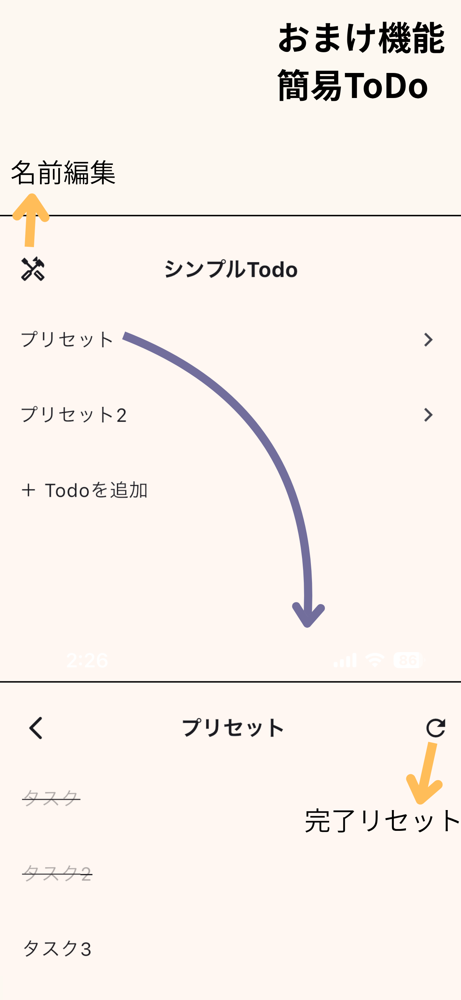
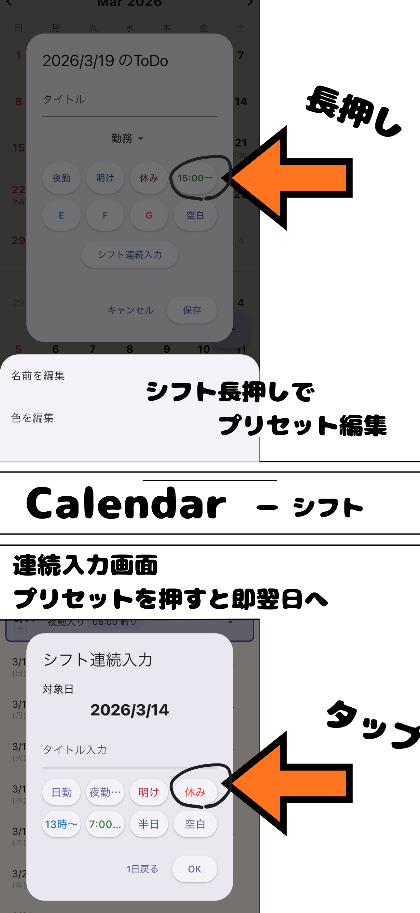
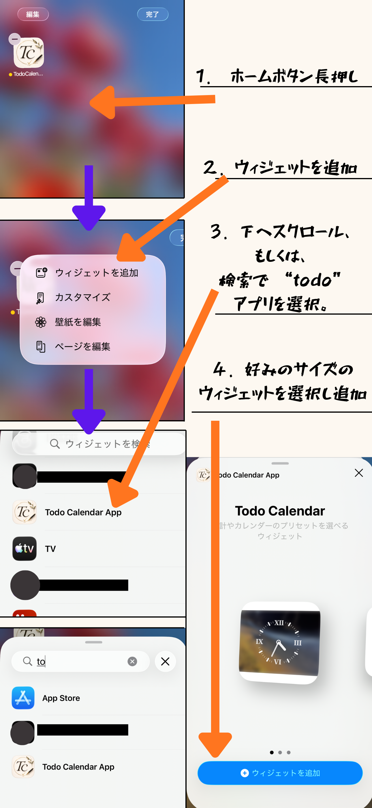
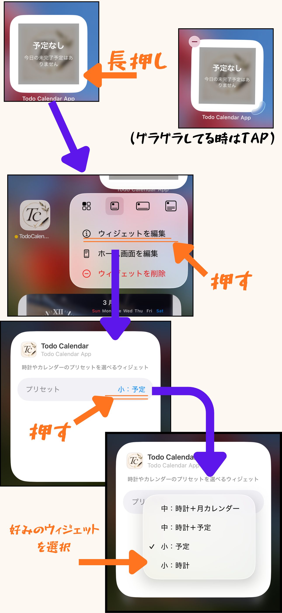

単発タスク
チェックがなければ翌日も表示されます。 単発タスクは、その日だけ使う「一回限りのやること」を管理するための項目です。 例として、買い物・支払い・通院・電話など、1回だけ発生する予定に向いています。
Support
Todo Calendar の基本的な使い方、お問い合わせ方法、公開情報をまとめたページです。 ご利用前の確認や、不具合・ご意見の送信先としてご利用ください。
Guide




チェックがなければ翌日も表示されます。 単発タスクは、その日だけ使う「一回限りのやること」を管理するための項目です。 例として、買い物・支払い・通院・電話など、1回だけ発生する予定に向いています。
決められた日のみ表示されます。 ホームウィジェット、通知やバッジの表示はこれを指しています。 スケジュールは、日付や時間に紐づく予定を整理するための項目です。 カレンダーとあわせて確認しやすく、予定の見落としを減らしたい場合に便利です。
チェックがついていても、翌日も表示します。 日課は、毎日または継続的に行う習慣をまとめて管理するための項目です。 毎日の確認を簡単にしたい内容や、繰り返し行う行動の記録に向いています。
入力したデータは端末内に保存されます。 データは直近3か月分まで保持され、それ以前の内容は順次上書きされます。
対応内容
アプリの不具合報告、改善要望、公開情報に関するお問い合わせを受け付けています。 内容によっては返信までお時間をいただく場合があります。
ご利用にあたって
本アプリは、タスク管理や予定整理を補助するためのアプリです。 記録内容の消失防止や重要情報の保管については、必要に応じて別途バックアップ等もご検討ください。
更新予定
今後のアップデートにあわせて、本ページにもFAQや各機能の詳しい説明を追加していく予定です。